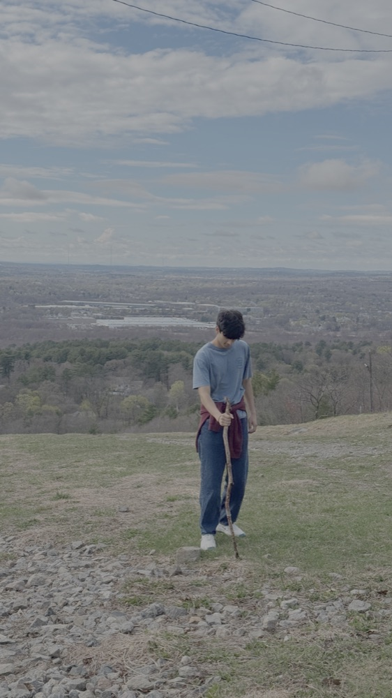

Hi, I'm Ishan Dhodapkar, a student at Babson College. Outside of class, I like getting outside and staying creative, whether that means hiking a new trail or picking up a pair of drumsticks.
Interests & Hobbies
- Hiking
- Playing drums
- Photography
- Building things with code


Check out my portfolio: ishandhodapkar.space